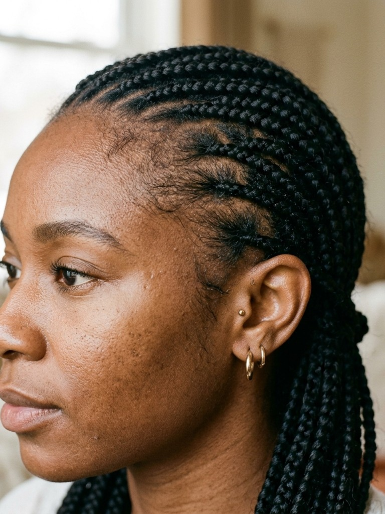

Your hair has a story. So does your hairline.
Most hair advice is written for straight hair. Tight coils grow differently, break differently and scar differently. A good plan begins with the right diagnosis.

Where is your hair loss starting?
Different causes start in different places. Select a pattern to see where it usually begins.
- Where
- Hairline, temples and edges
- Cause
- Sustained pulling from tight braids, weaves, extensions, wigs, ponytails and buns
- Early signs
- Tenderness, small bumps, headaches, broken edges, a thin “fringe” of hairs left at the very front
- Reversible?
- Yes when caught early. Permanent once follicles scar after years of tension
- Treatment
- Remove the tension, calm inflammation, minoxidil, PRP; transplant if scarred
- Name
- Central centrifugal cicatricial alopecia
- Where
- Crown, spreading outward
- Cause
- Not fully understood: genetics and inflammation both appear to play a role, alongside hair-care factors
- Signs
- Itch, tenderness or burning; smooth, shiny scalp where follicle openings are lost
- Reversible?
- Scarred follicles do not return, so early diagnosis matters most
- Treatment
- Anti-inflammatories (topical, injected, oral), minoxidil, PRP. Transplant only after long-term quiet disease
- Where
- All over, with a general thinning
- Cause
- A trigger 2 to 3 months earlier: illness, surgery, childbirth, crash dieting or rapid weight loss, low iron, thyroid disease, stress, new medicines
- Signs
- Heavy shedding in the comb, shower or pillow
- Reversible?
- Usually, within about 6 months once the trigger is removed
- Treatment
- Find and treat the trigger, correct nutrients, patience; minoxidil sometimes
- Where
- Men: receding hairline and crown. Women: widening part and thinner crown
- Cause
- Inherited sensitivity of follicles to hormones
- Course
- Gradual and progressive without treatment
- Treatment
- Minoxidil, anti-androgen medicines where suitable, PRP, and transplant for stable loss
- Where
- Round, smooth patches anywhere on the scalp, beard or eyebrows
- Cause
- Autoimmune: the body attacks follicles that are otherwise intact
- Reversible?
- Often regrows, may recur
- Treatment
- Steroid injections, topical treatments, and specialist options for extensive disease
Signs that need early attention.
- Pain, burning, itching or tenderness on the scalp
- Small bumps or pimples around the hairline or crown
- A smooth, shiny patch where hair used to grow
- Hair that breaks off at the edges after styling
- Sudden round bald patches
- Shedding that lasts more than three months
In scarring forms of hair loss such as CCCA and advanced traction alopecia, follicles that are lost are lost for good. Treating while the inflammation is active protects the hair you still have.
What happens at your first hair visit
History
Styles, products, heat, family history, diet, periods, pregnancies, illnesses and medicines.
Scalp examination
Under magnification (trichoscopy), pull test, and photographs to track progress.
Tests where needed
Iron studies, thyroid, vitamin D, hormones; a small scalp biopsy if scarring is suspected.
A staged plan
Protect what you have, regrow what can regrow, restore what cannot, in that order.
Protective styles, protected properly.
You do not have to give up the styles you love. You do have to respect tension.
| Style | Main risk | Safer way |
|---|---|---|
| Braids & twists | Tension at the hairline, especially when long, heavy or tight | Ask for looser, smaller-weight installs; start the braid with your own hair, not extensions, at the edges; remove within 6 to 8 weeks |
| Weaves & sew-ins | Tight cornrow base, glue, heavy hair | Avoid glue on the scalp; keep the base loose; leave out the edges; rest the scalp between installs |
| Wigs & lace fronts | Adhesives and tight bands on the hairline | Use breathable caps, non-adhesive grips, and take them off at night |
| Ponytails & buns | Constant pull in the same direction | Vary the position, use soft ties, avoid very high or tight pulls |
| Locs | Weight and tension at the root, over-twisting | Gentle maintenance; avoid tight retwists and heavy additions |
| Relaxers & hot combs | Scalp burns and breakage if overused | Space out treatments, avoid scalp contact, and never relax a sore or burnt scalp |
If a style hurts, causes headaches, raises bumps, or you cannot comfortably frown or blink, it is too tight. Take it down. Tension damage is cumulative and silent.
From protection to restoration.
Protect & calm
Styling changes, scalp care, treating inflammation and underlying causes such as low iron or thyroid disease.
Medical therapy
Minoxidil, anti-androgens or anti-inflammatory medicines as appropriate. Slow, steady, and monitored.
In-clinic treatments
PRP, steroid injections for active patches, and microneedling to support follicles.
Restoration
Hair transplantation for stable, permanent loss, planned for coils and for scar risk.
What the salon forgot to mention.
Not if they pull. A style is protective only if it is low tension, clean and removed on time.
Some is, much is not. Traction, inflammation, nutrition and hormones are all treatable, and even inherited loss responds to treatment.
Oils help moisture and breakage. They do not treat scarring or hormonal loss, and heavy products can aggravate scalp inflammation.
Telogen effluvium after rapid weight loss is usually temporary. Nutrient support and pacing reduce it.
Only stable loss with a healthy donor area is suitable, and it does not stop ongoing loss in untreated areas.
Hair loss FAQ
Can hair loss from braids or weaves grow back?
If caught early, often yes. Once follicles scar, regrowth is not possible and a transplant may be the option, once the scalp is stable.
Can I keep wearing protective styles?
Usually, with adjustments: lower tension, shorter wear time, no glue on the scalp, and breaks between installs.
When will I see results?
Hair grows slowly. Medical therapies take about 3 to 6 months to show; transplanted hair takes around 9 to 12 months to mature.
Is minoxidil safe for dark skin and scalp?
Yes, it is widely used. A prescriber will choose topical or oral forms and monitor for side effects. Not suitable for everyone, including in pregnancy.
Why is my hair thinning at the crown?
Common causes include CCCA, androgenetic alopecia and traction. A scalp examination is the only way to tell them apart, and the treatments differ.
Does stress cause hair loss?
Severe or prolonged stress can trigger telogen effluvium, which causes shedding two to three months later and usually recovers.
Find out what is really happening to your hair.
A scalp examination is the first step.